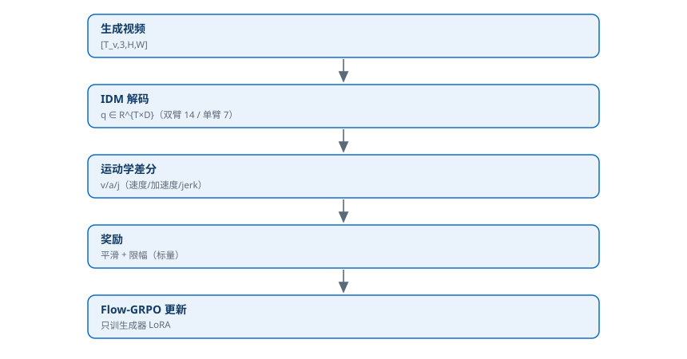

生成视频 → 冻结 IDM 解出关节序列 q[T,D] → 平滑/限幅奖励 → 只更新生成器 LoRA
EVA 解决「视频看着合理但机械臂执行不了」：用逆动力学模型把生成视频解成关节序列，按运动学（jerk/加速度/限幅）给奖励，再用 Flow-GRPO 更新生成器。
| 项 | 值 |
|---|---|
| 动作表示 | ONNX 版 ONNX CVAE UNet；动作空间由真实机器人 ONNX 表示定义 |
| 奖励 | −[λj·Huber(j)+λα·Huber(a)+λv·max(|v|−vmax,0)²+λa·max(|a|−amax,0)²] |
| 更新 | Flow-GRPO；只训生成器 LoRA |
| 结果 | Kinematic 70.5→91.4（论文自评，L2） |
| 层级 | 内容 |
|---|---|
| L1 计算理论 | 让生成视频里的动作真正可执行（平滑、不越限）；约束：真机执行代价高，奖励只能从视频/IDM 离线算。 |
| L2 表征与算法 | 表征：关节序列 q[T,D] 及其速度/加速度/jerk；算法：IDM 解码 + 运动学奖励 + Flow-GRPO。 |
| L3 实现 | 冻结 IDM；只训生成器 LoRA；λ/vmax/amax 超参（论文未给数值）。 |

物理：把「画面质量」翻译成「动作可执行性」，惩罚抖动/急加速/越限。
物理：jerk/加速度抑制抖动，限幅防止超速——机械臂真实执行的三类风险。
物理：组内比较，无 critic。
物理：KL 防止只讨好奖励、丢掉预训练画面先验。
按论文 §4.2–4.3 重建；无官方代码。
# 输入：video [T_v,3,H,W]；输出：标量奖励
def eva_reward(video, idm, vmax, amax, lam):
q = idm.decode(video) # 物理：视频→关节序列 q[T,D]
v = diff(q); a = diff(v); j = diff(a) # 物理：速度/加速度/jerk
return -(lam.j*huber(j) + lam.a*huber(a)
+ lam.v*relu(abs(v)-vmax).pow(2)
+ lam.a2*relu(abs(a)-amax).pow(2))
def flow_grpo_step(gen, videos, prompts):
# 物理：同提示词多生成，谁动作更平滑就强化谁
rs = [eva_reward(v, idm) for v in videos]
adv = (rs - mean(rs)) / (std(rs) + 1e-8)
gen.update(clipped_surrogate(adv, ratio) - beta*KL(gen, gen_ref)) # 仅 LoRA返回 方法精读 Wiki 索引 ｜ 博客：VLA/WAM 的 RL 后训练实现版